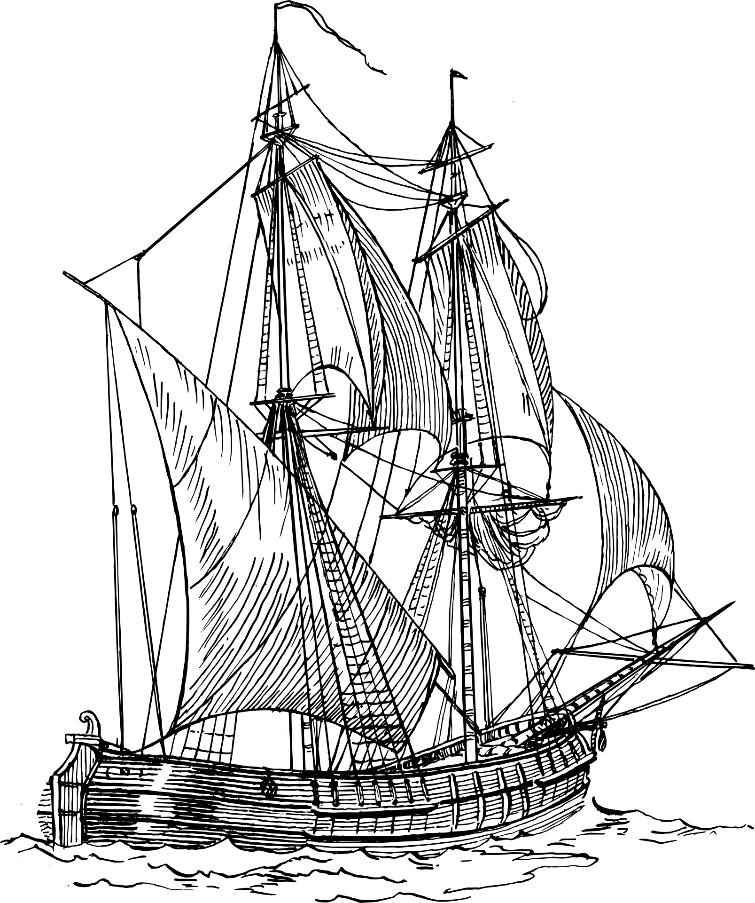

O mar é um lugar curioso e desconhecido, onde as mais incríveis criaturas podem ser encontradas e as mais belas paisagens podem ser vistas. Tudo que estudamos e conhecemos hoje dos oceanos teve origem nas navegações, então conhecer um pouco de sua história e curiosidades abrirá nossos olhos para esse mundo tão fantástico.

Todas as informações contidas nesse site foram retiradas do livro “Fundamentos de Oceanografia”, escrito por Tom Garrison.
